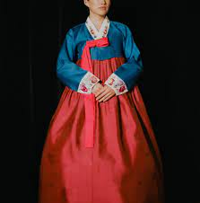

South Korea
South Korea

Generations have been passing down the enriched traditions and culture of South Korea. Through the moulding of history, these practices of traditions and culture have been incorporated into everyday life for South Koreans.
Confucianism
Confucianism was created by a Chinese philosopher, which stressed the importance of social order, respect for elders, and moral values. It also highlighted the value of learning from the past is beneficial to understand the present and shaping the future. Although it originated in China, it extended its influence to other countries, such as South Korea. It had a massive impact on the culture and society within South Korea. Confucianism in South Korea influences everything from family dynamics to the political system. In general, South Korea's ethical and cultural standards have been shaped by Confucians and infused into their daily lives.
Hanbok
The traditional Korean clothing is called Hanbok, and the word itself means "Korean clothing"; the word "Han" directly translates to Korean, and the word "bok" means clothing. This elegant garment has been around for centuries and is mainly composed of two parts. The first part is the jeogori, a short jacket with long and wide sleeves. The second part is the chima, a full-length high-waisted skirt. Hanbok is typically worn at special events, and the colour and design vary depending on social status and the occasion. It is more than just a piece of clothing but also a part of Korean culture.
Tea Ceremonies
Tea ceremonies have been a part of Korean culture for a long time. This ceremony is typically held to welcome guests, celebrate special occasions, or gather family and friends. The ceremony mainly focuses on the preparation and serving of the tea. A tea master leads the ceremony and creates a tranquil atmosphere so guests are guided into a meditative state. At the beginning of the tea ceremony, tea leaves are prepared and placed in the teapot. Hot water is poured into the teapot, and the leaves are left to steep for a few minutes. During this waiting period, the tea master adjusts for a perfect brew. After the tea is served, the master explains the origin and significance of the tea. Tea ceremonies are a powerful practice that will remain within South Korea's culture and traditions due to its deep-rooted ties to meditation.
Music & Dance
Korean music and dance encapsulate a large variety of different styles and forms. Each type has a rich history and significance to the community. Some of the most well-known types of traditional music are pansori, jeongga, and minyo. Pansori is a mixture of music, poetry and drama, presented in a narrative singing. While on the other hand, jeongga is a type of classical court music. Lastly, minyo is are Korean folk song used to illustrate daily life. While the list of different styles of traditional music is long, so are the different styles of traditional dance. There are two popular traditional dances called salpuri and talchum. Salpuri is performed to expel negative energy. Furthermore, talchum is performed at a celebration with masked dancers. The list of dances and music styles is only a glimpse into the vibrant history of Korean dance and music.
Confucianism, hanbok, tea ceremonies, and traditional music and dance are just the tip of the ice burg for Korean cultures and traditions. South Korea's eventful history helped shape the cultures and traditions thriving today.